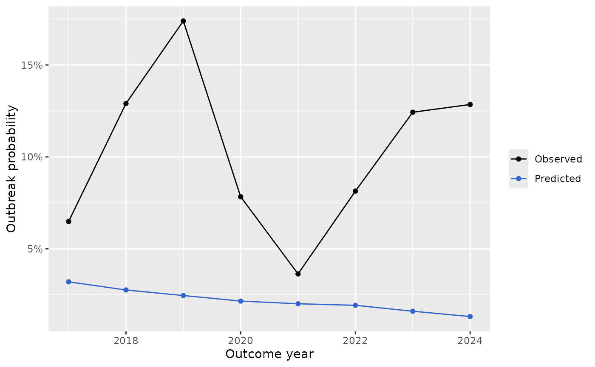
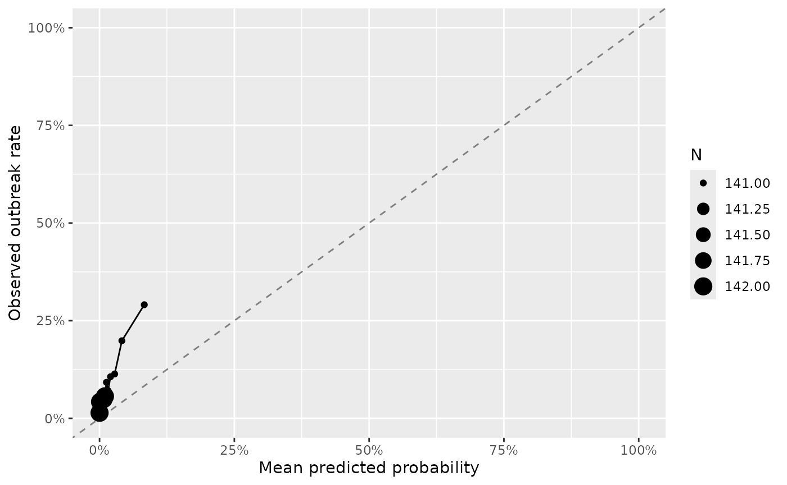

This vignette addresses a concrete research question:
Do countries with higher estimated susceptibility have higher outbreak risk in the following year?
All examples use bundled data and run offline.
Workflow:
- Create an outbreak outcome and lagged modelling panel.
- Fit baseline logistic and negative-binomial models.
- Evaluate out-of-time performance.
- Explore sensitivity to lag and outcome definition.
Function map:
-
make_outcome_outbreak(): turns case counts into binary outbreak labels. -
make_modelling_panel(): aligns predictors at yeartwith outbreak att + lag. -
fit_outbreak_models(): fits logistic and negative-binomial baselines. -
evaluate_outbreak_time_split(): one train/test split by year. -
evaluate_models_rolling_origin(): repeated rolling-origin validation.
1) Build the modelling panel
library(vpdsus)
panel <- vpdsus_example_panel()
suscept <- estimate_susceptible_static(panel, coverage_col = "coverage", pop_col = "pop_0_4")
mod_pc <- make_modelling_panel(panel, suscept, outcome = "outbreak_pc", lag_years = 1)
head(mod_pc)
#> # A tibble: 6 × 12
#> iso3 year year_next outcome coverage susceptible_prop susceptible_n cases
#> <chr> <int> <dbl> <int> <dbl> <dbl> <dbl> <dbl>
#> 1 AFG 2000 2001 1 0.27 0.73 2450411. 6532
#> 2 AFG 2001 2002 1 0.37 0.63 2137038. 8762
#> 3 AFG 2002 2003 0 0.35 0.65 2326982. 2486
#> 4 AFG 2003 2004 0 0.39 0.61 2322300. 798
#> 5 AFG 2004 2005 0 0.48 0.52 2049148. 466
#> 6 AFG 2005 2006 0 0.5 0.5 2035730 1296
#> # ℹ 4 more variables: cases_next <dbl>, cases_per_100k <dbl>, pop_total <dbl>,
#> # who_region <chr>Because this example panel is global and historical, we can inspect the modelling sample before fitting:
dplyr::summarise(
mod_pc,
n_rows = dplyr::n(),
n_countries = dplyr::n_distinct(iso3),
year_min = min(year, na.rm = TRUE),
year_max = max(year, na.rm = TRUE),
outbreak_rate = mean(outcome, na.rm = TRUE)
)
#> # A tibble: 1 × 5
#> n_rows n_countries year_min year_max outbreak_rate
#> <int> <int> <int> <int> <dbl>
#> 1 4289 192 2000 2023 0.108
mod_pc |>
dplyr::group_by(who_region) |>
dplyr::summarise(
n = dplyr::n(),
outbreak_rate = mean(outcome, na.rm = TRUE),
mean_susceptibility = mean(susceptible_prop, na.rm = TRUE),
.groups = "drop"
) |>
dplyr::arrange(dplyr::desc(n)) |>
head(12)
#> # A tibble: 7 × 4
#> who_region n outbreak_rate mean_susceptibility
#> <chr> <int> <dbl> <dbl>
#> 1 ECS 1136 0.0748 0.0747
#> 2 SSF 1115 0.223 0.265
#> 3 LCN 755 0.00265 0.0961
#> 4 EAS 609 0.0903 0.143
#> 5 MEA 488 0.115 0.133
#> 6 SAS 141 0.106 0.0993
#> 7 NAC 45 0 0.0838Key columns:
-
outcome: binary indicator in the next year (year_next) -
susceptible_prop: main predictor -
year,who_region: adjustment terms in the baseline model
Inspect how outbreak labels are constructed from cases:
outcomes <- make_outcome_outbreak(cases = panel$cases, pop = panel$pop_total)
head(outcomes)
#> # A tibble: 6 × 3
#> outbreak_abs outbreak_pc cases_per_100k
#> <int> <int> <dbl>
#> 1 NA NA NA
#> 2 NA NA NA
#> 3 NA NA NA
#> 4 NA NA NA
#> 5 NA NA NA
#> 6 NA NA NA2) Fit baseline outbreak model
fit_outbreak_models() fits:
- logistic regression for binary outbreak risk,
- negative-binomial regression for outbreak counts
(
cases_next), - with a common covariate set: susceptibility, year, and WHO region.
fit <- fit_outbreak_models(mod_pc)
fit$model
#>
#> Call: stats::glm(formula = outcome ~ susceptible_prop + year + who_region,
#> family = stats::binomial(), data = data)
#>
#> Coefficients:
#> (Intercept) susceptible_prop year who_regionECS
#> 74.24964 3.67960 -0.03842 0.17139
#> who_regionLCN who_regionMEA who_regionNAC who_regionSAS
#> -3.34782 0.33065 -13.88876 0.39475
#> who_regionSSF
#> 0.66467
#>
#> Degrees of Freedom: 4288 Total (i.e. Null); 4280 Residual
#> Null Deviance: 2931
#> Residual Deviance: 2454 AIC: 2472
fit$coefficients
#> # A tibble: 9 × 5
#> term estimate std_error statistic p_value
#> <chr> <dbl> <dbl> <dbl> <dbl>
#> 1 (Intercept) 74.2 15.4 4.81 1.51e- 6
#> 2 susceptible_prop 3.68 0.320 11.5 1.28e-30
#> 3 year -0.0384 0.00768 -5.00 5.64e- 7
#> 4 who_regionECS 0.171 0.188 0.910 3.63e- 1
#> 5 who_regionLCN -3.35 0.724 -4.63 3.72e- 6
#> 6 who_regionMEA 0.331 0.206 1.60 1.09e- 1
#> 7 who_regionNAC -13.9 356. -0.0390 9.69e- 1
#> 8 who_regionSAS 0.395 0.316 1.25 2.11e- 1
#> 9 who_regionSSF 0.665 0.168 3.97 7.33e- 5
fit$model_nb
#>
#> Call: MASS::glm.nb(formula = cases_next ~ susceptible_prop + year +
#> who_region, data = data, init.theta = 0.1263055413, link = log)
#>
#> Coefficients:
#> (Intercept) susceptible_prop year who_regionECS
#> -31.97646 4.51212 0.01973 -1.45464
#> who_regionLCN who_regionMEA who_regionNAC who_regionSAS
#> -3.94163 -1.35798 -3.21802 0.13350
#> who_regionSSF
#> -0.91424
#>
#> Degrees of Freedom: 4288 Total (i.e. Null); 4280 Residual
#> Null Deviance: 5832
#> Residual Deviance: 4925 AIC: 47230
fit$coefficients_nb
#> # A tibble: 9 × 5
#> term estimate std_error statistic p_value
#> <chr> <dbl> <dbl> <dbl> <dbl>
#> 1 (Intercept) -32.0 12.6 -2.54 1.11e- 2
#> 2 susceptible_prop 4.51 0.327 13.8 2.09e- 43
#> 3 year 0.0197 0.00626 3.15 1.62e- 3
#> 4 who_regionECS -1.45 0.143 -10.2 2.87e- 24
#> 5 who_regionLCN -3.94 0.154 -25.6 2.73e-144
#> 6 who_regionMEA -1.36 0.171 -7.94 2.01e- 15
#> 7 who_regionNAC -3.22 0.435 -7.39 1.44e- 13
#> 8 who_regionSAS 0.134 0.263 0.507 6.12e- 1
#> 9 who_regionSSF -0.914 0.147 -6.20 5.53e- 10Baseline comparison: coverage-only vs susceptibility-enabled
cmp_df <- mod_pc |>
dplyr::filter(!is.na(outcome), !is.na(coverage), !is.na(susceptible_prop))
fit_cov <- stats::glm(outcome ~ coverage + year + who_region, data = cmp_df, family = stats::binomial())
fit_sus <- stats::glm(outcome ~ susceptible_prop + year + who_region, data = cmp_df, family = stats::binomial())
fit_both <- stats::glm(outcome ~ coverage + susceptible_prop + year + who_region, data = cmp_df, family = stats::binomial())
data.frame(
model = c("coverage_only", "susceptibility_only", "coverage_plus_susceptibility"),
aic = c(AIC(fit_cov), AIC(fit_sus), AIC(fit_both))
)
#> model aic
#> 1 coverage_only 2471.869
#> 2 susceptibility_only 2471.869
#> 3 coverage_plus_susceptibility 2471.869Interpretation guide:
-
estimate > 0forsusceptible_propmeans higher susceptibility is associated with higher outbreak odds. - region/year terms absorb broad structural differences and temporal trend.
3) Time-aware evaluation
Use [evaluate_outbreak_time_split()] for:
- a train/test split by time,
- summary metrics,
- prediction and calibration plots.
ev <- evaluate_outbreak_time_split(mod_pc)
ev$metrics
#> # A tibble: 1 × 8
#> train_end n_train n_test prevalence accuracy brier log_loss auc
#> <dbl> <int> <int> <dbl> <dbl> <dbl> <dbl> <dbl>
#> 1 2015 2875 1414 0.103 0.897 0.0958 0.406 0.724Metrics meaning:
-
accuracy: classification performance at threshold 0.5 -
brier: probability calibration/discrimination loss (lower is better) -
log_loss: penalises overconfident errors -
auc: threshold-free discrimination
Inspect test-set predictions:
head(dplyr::select(ev$predictions, iso3, year, year_next, outcome, prob_outbreak, pred_outbreak))
#> # A tibble: 6 × 6
#> iso3 year year_next outcome prob_outbreak pred_outbreak
#> <chr> <dbl> <dbl> <int> <dbl> <int>
#> 1 AFG 2016 2017 0 0.0589 0
#> 2 AFG 2017 2018 0 0.0518 0
#> 3 AFG 2018 2019 0 0.0427 0
#> 4 AFG 2019 2020 0 0.0495 0
#> 5 AFG 2020 2021 0 0.0435 0
#> 6 AFG 2021 2022 1 0.0459 0Diagnostic plots:
ev$plots$time
ev$plots$calibration
4) Sensitivity checks
A) Outcome definition: per-capita vs absolute thresholds
mod_abs <- make_modelling_panel(panel, suscept, outcome = "outbreak_abs", lag_years = 1)
ev_abs <- evaluate_outbreak_time_split(mod_abs)
dplyr::bind_rows(
dplyr::mutate(ev$metrics, outcome_def = "outbreak_pc"),
dplyr::mutate(ev_abs$metrics, outcome_def = "outbreak_abs")
) |>
dplyr::select(outcome_def, train_end, n_train, n_test, accuracy, brier, log_loss, auc)
#> # A tibble: 2 × 8
#> outcome_def train_end n_train n_test accuracy brier log_loss auc
#> <chr> <dbl> <int> <int> <dbl> <dbl> <dbl> <dbl>
#> 1 outbreak_pc 2015 2875 1414 0.897 0.0958 0.406 0.724
#> 2 outbreak_abs 2015 2979 1458 0.820 0.140 0.459 0.756B) Lag sensitivity
lags <- c(1, 2)
lag_metrics <- purrr::map_dfr(lags, function(l) {
mod_l <- make_modelling_panel(panel, suscept, outcome = "outbreak_pc", lag_years = l)
m <- tryCatch(
evaluate_outbreak_time_split(mod_l)$metrics,
error = function(e) {
tibble::tibble(
train_end = NA_real_,
n_train = nrow(mod_l),
n_test = NA_integer_,
prevalence = NA_real_,
accuracy = NA_real_,
brier = NA_real_,
log_loss = NA_real_,
auc = NA_real_
)
}
)
dplyr::mutate(m, lag_years = l)
})
dplyr::select(lag_metrics, lag_years, accuracy, brier, log_loss, auc, n_test)
#> # A tibble: 2 × 6
#> lag_years accuracy brier log_loss auc n_test
#> <dbl> <dbl> <dbl> <dbl> <dbl> <int>
#> 1 1 0.897 0.0958 0.406 0.724 1414
#> 2 2 0.891 0.0989 0.397 0.744 1229C) Rolling-origin evaluation (recommended default for research claims)
ev_roll <- evaluate_models_rolling_origin(mod_pc, min_train_years = 1)
#> Warning: glm.fit: algorithm did not converge
ev_roll
#> # A tibble: 23 × 9
#> train_end n_train n_test prevalence accuracy brier log_loss auc split_type
#> <dbl> <int> <int> <dbl> <dbl> <dbl> <dbl> <dbl> <chr>
#> 1 2000 173 4116 0.100 0.783 0.134 0.410 0.746 rolling_o…
#> 2 2001 347 3942 0.0926 0.847 0.108 0.352 0.741 rolling_o…
#> 3 2002 526 3763 0.0856 0.900 0.0816 0.294 0.713 rolling_o…
#> 4 2003 713 3576 0.0822 0.917 0.0793 0.397 0.639 rolling_o…
#> 5 2004 892 3397 0.0810 0.919 0.0789 0.453 0.616 rolling_o…
#> 6 2005 1072 3217 0.0814 0.919 0.0798 0.498 0.609 rolling_o…
#> 7 2006 1255 3034 0.0834 0.917 0.0820 0.531 0.614 rolling_o…
#> 8 2007 1435 2854 0.0855 0.915 0.0840 0.535 0.623 rolling_o…
#> 9 2008 1620 2669 0.0873 0.913 0.0855 0.510 0.636 rolling_o…
#> 10 2009 1807 2482 0.0870 0.913 0.0842 0.445 0.648 rolling_o…
#> # ℹ 13 more rowsD) Regional heterogeneity snapshot
region_perf <- ev$predictions |>
dplyr::group_by(who_region) |>
dplyr::summarise(
n = dplyr::n(),
accuracy = mean(pred_outbreak == outcome),
prevalence = mean(outcome),
.groups = "drop"
) |>
dplyr::arrange(dplyr::desc(n))
region_perf
#> # A tibble: 7 × 4
#> who_region n accuracy prevalence
#> <fct> <int> <dbl> <dbl>
#> 1 ECS 394 0.898 0.102
#> 2 SSF 370 0.797 0.203
#> 3 LCN 247 0.992 0.00810
#> 4 EAS 184 0.946 0.0543
#> 5 MEA 161 0.882 0.118
#> 6 SAS 45 1 0
#> 7 NAC 13 1 05) Conflict exposure as an additional predictor
To test whether country-year conflict exposure helps explain outbreak risk and changes in cases/coverage, we can merge conflict indicators onto the same panel.
conf <- get_conflict(
years = sort(unique(panel$year)),
countries = unique(panel$iso3),
source = "ucdp_fixture"
)
panel_conf <- merge_conflict_with_panel(panel, conf)
conf_mod <- make_conflict_modelling_panel(
panel_conf,
lag_years = 1,
outcome = "outbreak_pc",
require_conflict_available = TRUE
)
dplyr::summarise(
conf_mod,
n_rows = dplyr::n(),
conflict_share = mean(conflict_any_event, na.rm = TRUE),
mean_conflict_fatalities_per_100k = mean(conflict_fatalities_per_100k, na.rm = TRUE)
)
#> # A tibble: 1 × 3
#> n_rows conflict_share mean_conflict_fatalities_per_100k
#> <int> <dbl> <dbl>
#> 1 6487 0.294 3.92
fit_conf <- fit_conflict_effect_models(conf_mod)
fit_conf$coefficients |>
dplyr::filter(grepl("^conflict_", term)) |>
dplyr::arrange(model, term)
#> # A tibble: 6 × 6
#> model term estimate std_error statistic p_value
#> <chr> <chr> <dbl> <dbl> <dbl> <dbl>
#> 1 delta_coverage_lm conflict_any_event -6.46e-3 0.00192 -3.37 7.71e-4
#> 2 delta_coverage_lm conflict_fatalities_p… -1.86e-5 0.0000601 -0.309 7.57e-1
#> 3 delta_log_cases_lm conflict_any_event 4.60e-2 0.0698 0.659 5.10e-1
#> 4 delta_log_cases_lm conflict_fatalities_p… 3.09e-4 0.00215 0.143 8.86e-1
#> 5 outbreak_logit conflict_any_event 4.27e-1 0.119 3.57 3.52e-4
#> 6 outbreak_logit conflict_fatalities_p… -3.65e-3 0.00413 -0.886 3.76e-1Take-home interpretation
- This module already tests an interesting and useful public-health hypothesis: whether susceptibility helps predict next-year outbreak risk.
- The conflict extension lets you test whether conflict occurrence (discrete) and intensity (continuous) add predictive information for outbreak risk and changes in incidence/coverage.
- The current baseline model is intentionally simple and transparent.
- Next upgrades for a research project are richer model classes, rolling-origin validation, and explicit baseline comparators.